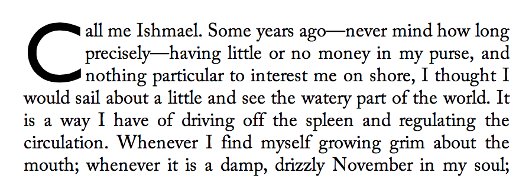

1. Line Heights and Baseline Alignment
This section is being rewritten. Refer to section 10.8 of [CSS21] for the normative CSS definition or the 2002 Working Draft if you want pretty pictures. (But ignore the old text, half of it’s wrong. We’re not specifying which half, that’s to be determined.)
1.1. Dominant Baselines: the dominant-baseline property
| Name: | dominant-baseline |
|---|---|
| Value: | auto | text-bottom | alphabetic | central | mathematical | hanging | text-top |
| Initial: | normal |
| Applies to: | block containers and inline boxes |
| Inherited: | yes |
| Percentages: | N/A |
| Media: | visual |
| Computed value: | as specified |
| Animatable: | no |
This property specifies the dominant baseline, which is the baseline used to align the box’s text and inline-level contents. Values have the following meanings:
- auto
- Equivalent to alphabetic in horizontal writing modes and in vertical writing modes when text-orientation is sideways, sideways-right, or sideways-left. equivalent to central in vertical writing modes when text-orientation is mixed or upright.
- text-bottom
- Use the bottom of the em box as the baseline.
- alphabetic
- Use the alphabetic baseline.
- central
- Use the central baseline (halfway between the ascent and descent).
- mathematical
- Use the mathematical baseline.
- hanging
- Use the hanging baseline.
- text-top
- Use the top of the em box as the baseline.
See [CSS3-WRITING-MODES] for an introduction to dominant baselines.
Should be text-over and text-under instead of text-top and text-bottom, but maybe it’s better not to use those terms for consistency with legacy vertical-align.
1.2. Transverse Box Alignment: the vertical-align property
| Name: | vertical-align |
|---|---|
| Value: | <‘baseline-shift’> || <‘alignment-baseline’> |
| Initial: | baseline |
| Applies to: | inline-level boxes |
| Inherited: | no |
| Percentages: | N/A |
| Media: | visual |
| Computed value: | as specified |
| Animatable: | no |
This shorthand property specifies how an inline-level box is aligned within the line. Values are the same as for its longhand properties, see below.
Authors should use this property (vertical-align) instead of its longhands.
1.2.1. Alignment Point: alignment-baseline longhand
| Name: | alignment-baseline |
|---|---|
| Value: | baseline | text-bottom | alphabetic | middle | central | mathematical | text-top | bottom | center | top |
| Initial: | baseline |
| Applies to: | inline-level boxes |
| Inherited: | no |
| Percentages: | N/A |
| Media: | visual |
| Computed value: | as specified |
| Animatable: | no |
Specifies what point of an inline-level box is aligned to what point in the parent. Values are defined below:
For the following definitions, the margin box is used for atomic inlines, and the leading box for non-replaced inlines:
- baseline
- Use the dominant baseline choice of the parent. Match the box’s corresponding baseline to that of its parent.
- text-bottom
- Match the bottom of the box to the bottom of the parent’s content area.
- alphabetic
- Match the box’s alphabetic baseline to that of its parent.
- middle
- Align the vertical midpoint of the box with the baseline of the parent box plus half the x-height of the parent.
- central
- Match the box’s central baseline to the central baseline of its parent.
- mathematical
- Match the box’s mathematical baseline to that of its parent.
- text-top
- Match the top of the box to the top of the parent’s content area.
For the following definitions, the alignment subtree is as defined in [CSS21].
- top
- Align the top of the aligned subtree with the top of the line box.
- center
- Align the center of the aligned subtree with the center of the line box.
- bottom
- Align the bottom of the aligned subtree with the bottom of the line box.
Putting top, center, and bottom in here is awkward, because they’re not really baselines. :/
SVG implementations may support the following aliases in order to support legacy content:
before-edge | text-before-edge = text-top after-edge | text-after-edge = text-bottom
These values are not allowed in the vertical-align shorthand.
1.2.2. Alignment Shift: baseline-shift longhand
| Name: | baseline-shift |
|---|---|
| Value: | <length> | <percentage> | sub | super |
| Initial: | 0 |
| Applies to: | inline-level boxes |
| Inherited: | no |
| Percentages: | refer to the used value of line-height |
| Media: | visual |
| Computed value: | absolute length, percentage, or keyword specified |
| Animatable: | no |
This property specifies by how much the box is shifted up from its alignment point. It does not apply when alignment-baseline is top or bottom.
Authors should use the vertical-align shorthand instead of this property.
Values have the following meanings:
- <length>
- Raise (positive value) or lower (negative value) by the specified length.
- <percentage>
- Raise (positive value) or lower (negative value) by the specified percentage of the line-height.
- sub
- Lower by the offset appropriate for subscripts of the parent’s box. (The UA should use the parent’s font data to find this offset whenever possible.)
- super
- Raise by the offset appropriate for superscripts of the parent’s box. (The UA should use the parent’s font data to find this offset whenever possible.)
User agents may additionally support the keyword baseline as computing to 0 if is necessary for them to support legacy SVG content.
2. Initial Letters
The editors would appreciate any examples of drop initials in non-western scripts, especially Arabic and Indic scripts.
2.1. An Introduction to Initial Letters
Large, decorative letters have been used to start new sections of text since before the invention of printing. In fact, their use predates lowercase letters entirely.
2.1.1. Drop Initial
A dropped initial (or “drop cap”) is a larger-than-usual letter at the start of a paragraph, with a baseline at least one line lower than the first baseline of the paragraph. The size of the drop initial is usually indicated by how many lines it occupies. Two- and three-line drop initials are very common.

Three-line drop initial with E acute. Since the cap-height of the drop initial aligns with the cap-height of the main text, the accent extends above the paragraph.
The exact size and position of a dropped initial depends on the alignment of its glyph. Reference points on the drop cap must align precisely with reference points in the text. In Western scripts, the top reference points are the cap height of the initial letter and of the first line of text. The bottom reference points are the alphabetic baseline of the initial letter and the baseline of the Nth line of text. Figure 2 shows a simple two-line drop cap, with the relevant reference lines marked.

Two-line drop cap showing baselines (green lines), cap-height (red line), and ascender (cyan line).
The alignment constraints for drop initials depend on the writing system. In ideographic scripts, the initial letter extends from the block-start edge of the first line to the block-end edge of the Nth line.

Two-line drop initial in vertical writing mode

Diagram of Japanese initial letter in vertical writing mode
Note: In some cases, the exclusion area for the drop initial is larger than its glyph in order to preserve inline-axis alignment. This effect is out-of-scope for this level. However, extra spacing can still be given using margins.
In some Indic scripts, the top alignment point is the hanging baseline, and the bottom alignment point is the text-after-edge.

Devangari initial letter aligned with hanging baseline. Alignment points shown in red.
2.1.2. Sunken Initial Letters
Some styles of drop initials do not align with the first line of text. A sunken initial (or “sunken cap”) both sinks below the first baseline, and extends above the first line of text.

Sunken cap. The letter drops two lines, but is the size of a three-line initial letter.
2.1.3. Raised Initial Letters
A raised initial (often called a “raised cap” or “stick-up cap”) “sinks” to the first text baseline. Unlike simply increasing the font size, which affects the line spacing below it to make room for potential descenders, it does not sink below that.

Raised cap. The initial letter is the size of a 3-line initial, but does not drop.
2.2. Selecting Initial Letters
Initial letters are typically a single letter, which can be selected by the ::first-letter pseudo-element, as defined in [SELECT].
Authors who need more control over which characters are included in an initial letter, or who want to apply initial-letter formatting to replaced elements or multiple words can also apply the initial-letter property to the first inline-level child of a block container.
<p>This paragraph has a dropped “T”. <p><img alt="H" src="illuminated-h.svg">ere we have an illuminated “H”. <p><span>Words may also</span> be given initial letter styling at the beginning of a paragraph.
::first-letter, /* style first paragraph’s T */
img, /* style illuminated H */
span /* drop Words may also */
{ initial-letter: 2; }
2.3. Creating Initial Letters: the initial-letter property
| Name: | initial-letter |
|---|---|
| Value: | normal | [<number> <integer>?] |
| Initial: | normal |
| Applies to: | ::first-letter pseudo-elements and inline-level first child of a block container
|
| Inherited: | no |
| Percentages: | N/A |
| Media: | visual |
| Computed value: | as specified |
| Animatable: | no |
This property specifies styling for dropped, raised, and sunken initial letters. It takes the following values:
- normal
- No special initial-letter effect. Text behaves as normal.
- <number>
- This first argument defines the size of the initial letter, in terms of how many lines it occupies. Negative values are not allowed.
- <integer>
- This optional second argument argument defines the number of lines the initial letter should sink. Values must be greater than zero. If omitted, it duplicates the first argument, floored to the nearest positive whole number.
An initial letter is a box to which initial-letter applies and is not normal: this triggers the special layout considerations described below.
- initial-letter: 3
- (initial-letter: 3 3)
- Represents a dropped initial 3 lines high, 3 lines deep.

- initial-letter: 3 2
- Represents a sunken initial 3 lines high, 2 lines deep.

- initial-letter: 3 1
- Represents a raised initial 3 lines high, 1 line deep.

p::first-letter { initial-letter: 2; }
Define interaction with Ruby. Easiest is to make it not apply to/within ruby.
The initial-letter property does not apply to boxes that are not positioned at the start of the line due to bidi reordering.
2.4. Alignment of Initial Letters: the initial-letter-align property
As mentioned earlier, the alignment of initial letters depends on the script used. The initial-letter-align property can be used to specify the proper alignment.
| Name: | initial-letter-align |
|---|---|
| Value: | [ auto | alphabetic | hanging | ideographic ] |
| Initial: | auto |
| Applies to: | ::first-letter pseudo elements and inline level first child of a block container
|
| Inherited: | no |
| Percentages: | N/A |
| Media: | visual |
| Computed value: | ??? |
| Animatable: | no |
- auto
- The user agent selects the value which corresponds to the language of the text. Western languages would default to alphabetic, CJK languages to ideographic, and some Indic languages to hanging.
- alphabetic
- As described above, the cap height of the initial letter aligns with the cap height of the first line of text. The baseline of the initial letter aligns with the baseline of the Nth text baseline.
- hanging
- The hanging baseline of the initial letter aligns with the hanging baseline of the first line of text.
- ideographic
- The initial letter is centered in the N-line area.
Input from those knowledgeable about non-Western typographic traditions would be very helpful in describing the appropriate alignments. More values may be required for this property.
span.initial {
initial-letter: 2;
initial-letter-alignment: ideographic;
}
If initial-letter is applied to an image or other atomic element that does not provide the necessary alignment information, the alignment points for the atomic inline must be synthesized from the content edges.
Note: For vertical-align, the alignment points of an atomic inline are synthesized from the margin edges. [CSS3-WRITING-MODES]
2.5. Margins, Borders, and Padding
Initial letters can be styled with margins, padding, and borders just like any other box. Their vertical alignment and sizing is not affected; however the effective exclusion area is (and corresponds to the margin area).
When padding and borders are zero, the initial letter may be kerned; see below.
2.6. Indentation and Multi-line Effects
text-indent and hanging-punctuation apply to the first line of text as normal in the presence of initial letters. Lines affected by the exclusion are shortened, as in the presence of floats, and are affected the same way.
If an initial letter is too long to fit on one line, it wraps (according to the usual text-wrapping rules), each line filled and formatted exactly as if it were the first line and the initial letter too long to fit any subsequent normal text. Any normal text after the initial letter starts on its last line, affected exactly as if that line were the first line.

Drop cap extends to two lines.
2.7. Sizing Initial Letters
The size of a drop initial is determined by the need to satisfy the required alignment. For an N-line drop initial in a Western script, the cap-height of the letter needs to be (N – 1) times the line-height, plus the cap-height of the surrounding text. Note this height is not the font size of the drop initial.
Actually calculating this font size is tricky. For an N-line drop initial, we find the drop initial font size to be:

The line height used in this calculation is the line-height of the containing block (or, in the case where a baseline grid is in use, the baseline-to-baseline spacing required by the baseline grid [CSS3-LINE-GRID]). The contents of the lines spanned, and therefore any variation in their heights and positions, is not accounted for.
2.7.1. Shaping and Glyph Selection
When initial-letter is not normal, shaping does not occur across the box’s boundaries, as if the zero-width non-joiner (U+200C) were inserted before/after the initial letter. For example, if the first letter of the Farsi word “پس” were styled with initial-letter: 2 1, both letters would be styled in their isolated forms, with “پ” as the initial letter, followed by the normally-styled “س”.
Are there other things we need to consider here?
2.8. Space Around Initial Letters
The glyph(s) of an initial letter do not always fit within the specified sink. For example, if an initial letter has a descender, it could crash into the (n+1)th line of text. This is not desirable.

Incorrect: three-line initial letter with descender
Text is therefore excluded around the glyph bounding boxes of the initial letters.
Specifically, for non-atomic initial letters, the content box of the element is sized to fit:
- The specified amount of sink (i.e the distance from the top alignment point to the bottom alignment point).
- The actual ascent and descent and side bearings of all the glyphs it contains that are part of its inline formatting context, even if they leak outside their em boxes.
- The margin boxes of all the atomic inlines it contains that are part of its inline formatting context, even if they leak outside its own line-height.
The margin box of the initial letter is then made an exclusion area for subsequent text.

Correct: text excluded around glyph bounding box
2.9. Positioning and Kerning Initial Letters
In the block axis, the initial letter is positioned to satisfy its alignment requirements. (See initial-letter-align.)
In the inline axis, the position of the inline letter is given by aligning its start margin edge to the start edge of the containing block.
However, if the initial letter is a non-atomic inline with zero padding and borders, the UA must apply an additional negative offset on the start side of the amount necessary to optically align the first glyph to the containing block edge as it would be in normal text.
Additionally, when borders and padding are zero
and the next typographic character unit after the initial letter
is not a space (Unicode general category Zs),
the UA should optically kern the first line of text into the initial letter’s area
as necessary to maintain perceptual continuity of the text.
In the top paragraph, the initial letter "A" has a word space after it. In the middle paragraph, the initial letter "A" is part of a word. In this case, the first line of text should be kerned into the initial letter’s area as shown in the bottom paragraph.
2.10. Clearing Initial Letters
2.10.1. Raised and sunken caps
An initial letter does not affect the position of its containing element. For “raised caps” or “sunken caps,” the effect is created as if the text around the initial letter was pushed down, rather than the letter extending up into previous elements.
Raised cap (initial-letter: 3 1) on right; note that the position of the “C” is the same in both cases, but on the right all text is moved down relative to the initial letter.
Handle glyph ink above cap height of font.
2.10.2. Short paragraphs with initial letters
A paragraph with an initial letter can have fewer lines of text than the initial letter occupies. In this case, the initial letter’s top alignment is still honored, and its exclusion area continues into any subsequent blocks. This forces the subsequent inline-level content to wrap around the initial letter—exactly as if that block’s text were part of its own containing block. (This is similar to how floats exclude content in subsequent block boxes.)
The red text is a short paragraph with an initial letter. Note the subsequent paragraph wraps around the initial letter just as text in the paragraph with the initial letter does.
If the subsequent block starts with an initial letter, establishes a new formatting context, or specifies clear in the initial letter’s containing block’s start direction, then it must clear the previous block’s initial letter.
The red text is a short paragraph with an initial letter. The subsequent paragraph clears because it also has an initial letter.
2.10.3. Interaction with floats
Floats always clear an initial letter when floated to the same side. When floated to the opposite side, they are pushed down to clear the initial letter only if they have specified clear to this side or they do not fit without overlapping the initial letter.
Is this the behavior we want? What if the float is on the same line as the initial letter?
Acknowledgments
Special thanks goes to the initial authors, Eric A. Meyer and Michel Suignard.
In additions to the authors, this specification would not have been possible without the help from:
David Baron, John Daggett, Stephen Deach, Sujal Parikh, Grzegorz Zygmunt, Chris Wilson, David M Brown, Bobby Tung, Shinyu Murakami, David Hyatt, Sylvain Galineau, Alan Stearns, Ted O’Connor.